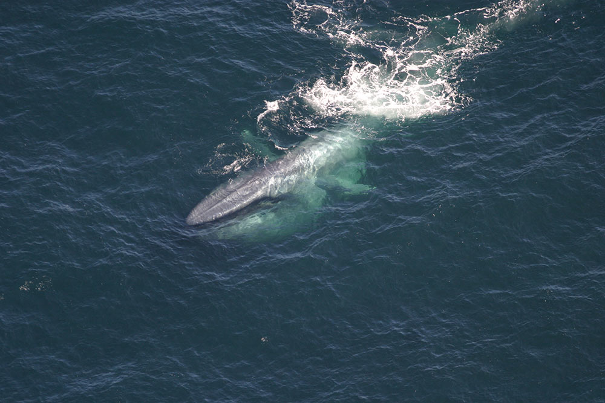
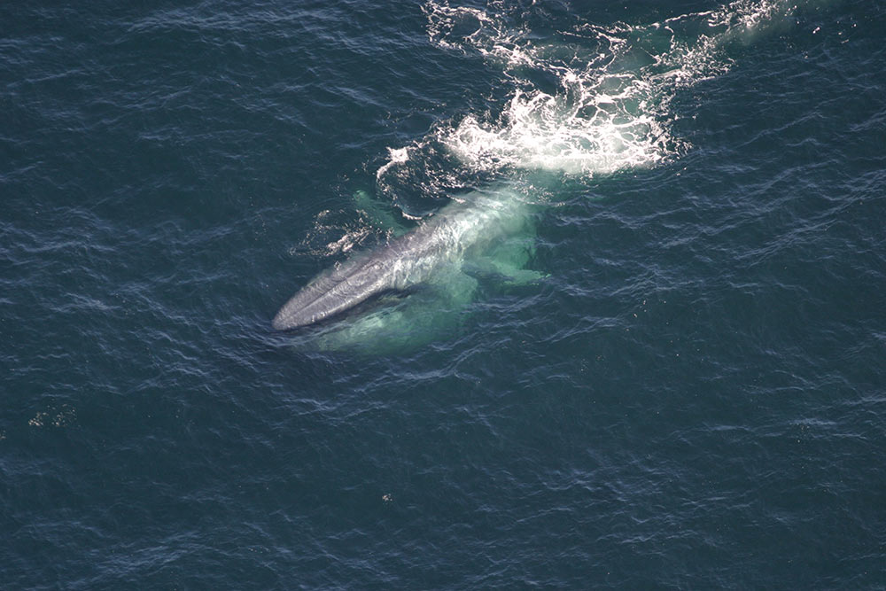

What is the Blue Whale?
The Balaenoptera Musculus, better known as the Blue Whale, is an endangered species, with there only being about 10,000 to 25,000 whales remaining. The mammals are carnivores that have a lifespan ranging from 80-90 years. Contrary to their name, they are nt actually blue. They appear blue while underwater, but they appear a blueish gray on the surface. They do not have many predators, but sometimes they are injured or killed by killer whales or sharks.
Extinction Over Time
Hunters in the 1900s seeked whale oil, which caused them to kill about 360,000 blue whales. This pushed the blue whales to the brinkof extinction. Since 1966, they have been under protection of the International Whaling Commussion. Even with protection, they have only had mild recovery. Now, the blue whales today have been more vulnerable to extinction because of many factors in the world. These factors include ship crashes and strikes, climate change, sea level rise, and sea temperature. Other sea life are also at risk because of these same factors, including krill. Krill is the main food source for blue whales, and if they are at risk, the blue whales will have a decreased food supply.
 
